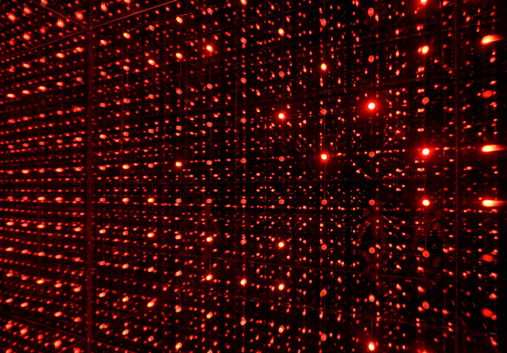
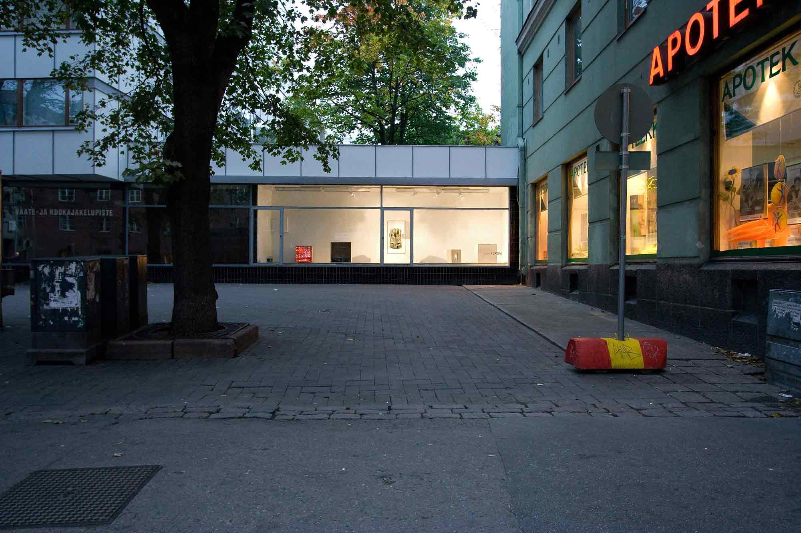

Galleria Aklovi
2007
125 Litres of Infinity
Curated by Otto Karvonen
“Laatikko” (The Box in Finnish) was both the formal and conceptual starting point of this group exhibition.
The invited artists were asked to make a work either in or of a box, the measurements and proportions of which
were free to choose. The boxes gave visual coherence for the miniature exhibition as whole and at the same
time offered privacy for individual works of art. The exhibition presented versatile collection of
installations using different media: sculpture, photography, video and light.
Our work for the exhibition was an installation, “125 litraa äärettömyyttä” (125 Liters of Infinity). The
interior of our 50x50x50 cm box was covered with mirror from all sides, except for an open one covered with
transparent glass. In the center of the box, facing the viewer, was a grid made of 100 self blinking red
led-lights. The enclosed mirrors multiplied the lights, giving an impression of endlessly continuing matrix of
leds. At night, the inner surface of the transparent glass also worked as a mirror, making the impression
completely three dimensional.

